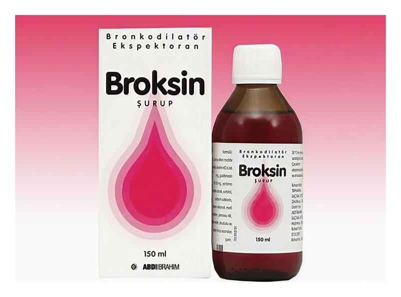

Broksin 6.66 mg/5 ml+100 mg/5 ml SURUP,150 ml

Ne için kullanılır
KT · Bölüm 1BROKSİN, renkli 150 ml'lik cam şişede, Her 5 ml'de 100 mg guaifenesin ve 6,66 mg efedrin hidroklorür içeren kullanıma hazır şuruptur.
BROKSİN ekspektoran adı verilen ilaç grubundandır.
BROKSİN nefes darlığının görüldüğü bronşiyal astım, kronik bronşit (uzun süren bronş iltihabı), amfizem (doku veya organlarda aşırı hava birikmesi), trakeit (soluk borusu iltihabı), bronşektazi (bronşların harabiyeti sonucu kalıcı genişlemesi), larenjit (gırtlak
iltihabi), boğmaca öksürüğü, kuru öksürükler ve sigaradan ileri gelen tahriş edici öksürüklerde bronşlarda gevşemeye ve bir ekspektorana (balgamın atılmasını kolaylaştıran) gerek görülen solunum yolu hastalıklarında yardımcı ve rahatlatıcı amaçlarla kullanılır.